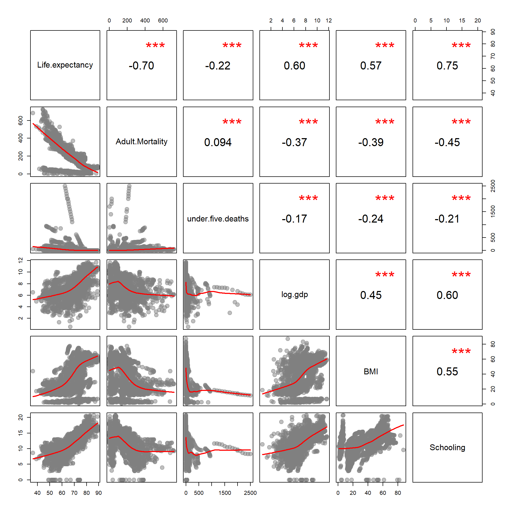

# setwd("C:/Users/jdlecy/Dropbox/00 - PEDA/00 - GITHUB/INSTRUCTOR-FILES-DATA-SCIENCE/Data-Science-Class/DATA")
dat <- read.csv( "life-expectancy.csv", stringsAsFactors=F )
head( dat ) %>% pander()| Country | Year | Status | Life.expectancy | Adult.Mortality |
|---|---|---|---|---|
| Afghanistan | 2015 | Developing | 65 | 263 |
| Afghanistan | 2014 | Developing | 59.9 | 271 |
| Afghanistan | 2013 | Developing | 59.9 | 268 |
| Afghanistan | 2012 | Developing | 59.5 | 272 |
| Afghanistan | 2011 | Developing | 59.2 | 275 |
| Afghanistan | 2010 | Developing | 58.8 | 279 |
| infant.deaths | Alcohol | percentage.expenditure | Hepatitis.B | Measles |
|---|---|---|---|---|
| 62 | 0.01 | 71.28 | 65 | 1154 |
| 64 | 0.01 | 73.52 | 62 | 492 |
| 66 | 0.01 | 73.22 | 64 | 430 |
| 69 | 0.01 | 78.18 | 67 | 2787 |
| 71 | 0.01 | 7.097 | 68 | 3013 |
| 74 | 0.01 | 79.68 | 66 | 1989 |
| BMI | under.five.deaths | Polio | Total.expenditure | Diphtheria | HIV.AIDS |
|---|---|---|---|---|---|
| 19.1 | 83 | 6 | 8.16 | 65 | 0.1 |
| 18.6 | 86 | 58 | 8.18 | 62 | 0.1 |
| 18.1 | 89 | 62 | 8.13 | 64 | 0.1 |
| 17.6 | 93 | 67 | 8.52 | 67 | 0.1 |
| 17.2 | 97 | 68 | 7.87 | 68 | 0.1 |
| 16.7 | 102 | 66 | 9.2 | 66 | 0.1 |
| GDP | Population | thinness..1.19.years | thinness.5.9.years |
|---|---|---|---|
| 584.3 | 33736494 | 17.2 | 17.3 |
| 612.7 | 327582 | 17.5 | 17.5 |
| 631.7 | 31731688 | 17.7 | 17.7 |
| 670 | 3696958 | 17.9 | 18 |
| 63.54 | 2978599 | 18.2 | 18.2 |
| 553.3 | 2883167 | 18.4 | 18.4 |
| Income.composition.of.resources | Schooling |
|---|---|
| 0.479 | 10.1 |
| 0.476 | 10 |
| 0.47 | 9.9 |
| 0.463 | 9.8 |
| 0.454 | 9.5 |
| 0.448 | 9.2 |

About This File:
https://www.kaggle.com/kumarajarshi/life-expectancy-who/version/1#
The Global Health Observatory (GHO) data repository under World Health Organization (WHO) keeps track of the health status as well as many other related factors for all countries The datasets are made available to public for the purpose of health data analysis. The dataset related to life expectancy, health factors for 193 countries has been collected from the same WHO data repository website and its corresponding economic data was collected from United Nation website. Among all categories of health-related factors only those critical factors were chosen which are more representative. It has been observed that in the past 15 years , there has been a huge development in health sector resulting in improvement of human mortality rates especially in the developing nations in comparison to the past 30 years. Therefore, in this project we have considered data from year 2000-2015 for 193 countries for further analysis. The individual data files have been merged together into a single dataset. On initial visual inspection of the data showed some missing values. As the datasets were from WHO, we found no evident errors. Missing data was handled in R software by using Missmap command. The result indicated that most of the missing data was for population, Hepatitis B and GDP. The missing data were from less known countries like Vanuatu, Tonga, Togo,Cabo Verde etc. Finding all data for these countries was difficult and hence, it was decided that we exclude these countries from the final model dataset. The final merged file(final dataset) consists of 22 Columns and 2938 rows which meant 20 predicting variables. All predicting variables was then divided into several broad categories: Immunization related factors, Mortality factors, Economical factors and Social factors.
CountryCountry YearYear StatusDeveloped or Developing status Life expectancy Life Expectancy in age Adult MortalityAdult Mortality Rates of both sexes (probability of dying between 15 and 60 years per 1000 population) infant deathsNumber of Infant Deaths per 1000 population AlcoholAlcohol, recorded per capita (15+) consumption (in litres of pure alcohol) percentage expenditureExpenditure on health as a percentage of Gross Domestic Product per capita(%) Hepatitis BHepatitis B (HepB) immunization coverage among 1-year-olds (%) Measles Measles - number of reported cases per 1000 population BMI Average Body Mass Index of entire population under-five deaths Number of under-five deaths per 1000 population PolioPolio (Pol3) immunization coverage among 1-year-olds (%) Total expenditureGeneral government expenditure on health as a percentage of total government expenditure (%) Diphtheria Diphtheria tetanus toxoid and pertussis (DTP3) immunization coverage among 1-year-olds (%) HIV/AIDSDeaths per 1 000 live births HIV/AIDS (0-4 years) GDPGross Domestic Product per capita (in USD) PopulationPopulation of the country thinness 1-19 yearsPrevalence of thinness among children and adolescents for Age 10 to 19 (% ) thinness 5-9 yearsPrevalence of thinness among children for Age 5 to 9(%) Income composition of resourcesHuman Development Index in terms of income composition of resources (index ranging from 0 to 1) SchoolingNumber of years of Schooling(years)